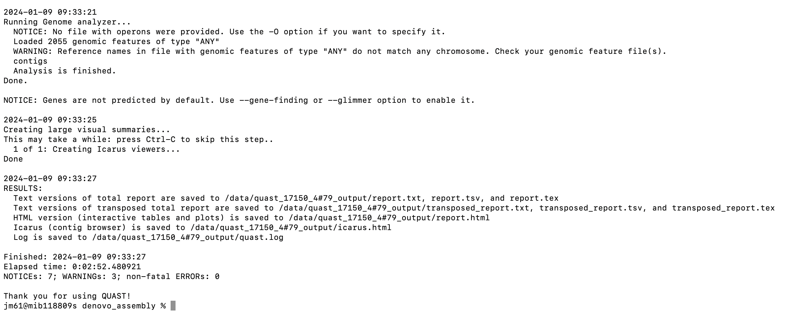

Before you being this section, navigate to the denovo_assembly folder. You will use this folder and its contents to learn and practice this section.
By the end of this section, you will be able to assess the quality of assembled reads using QUAST.
Overview
Modern DNA sequencing technologies cannot produce the complete sequence of a chromosome. Instead, they generate large numbers of reads, ranging from dozens to thousands of consecutive bases, sampled from different parts of the genome. Genome assembly software combines the reads into larger regions called contigs. However, current sequencing technologies and software face many complications that impede reconstruction of full chromosomes, including errors in reads and large repeats in the genome.
Different assembly programs use different heuristic approaches to tackle these challenges, resulting in many differences in the contigs they output. This leads to the questions of how to assess the quality of an assembly and how to compare different assemblies.
Further reading
QUAST: quality assessment tool for genome assembliesTool(s)
We will be using QUAST tool in this section. You can download it from a docker repository using the commands:
docker pull staphb/quast
QUAST stands for QUality ASsessment Tool. It evaluates genome/metagenome assemblies by computing various metrics. The current QUAST toolkit includes the general QUAST tool for genome assemblies, MetaQUAST, the extension for metagenomic datasets, QUAST-LG, the extension for large genomes (e.g., mammalians), and Icarus, the interactive visualizer for these tools.
The QUAST package works both with and without reference genomes. However, it is much more informative if at least a close reference genome is provided along with the assemblies. The tool accepts multiple assemblies, thus is suitable for comparison.
Assessing generated assemblies
We will assess the quality of "17150_4#79" contigs generated from de novo assembly described in the previous module - copy contigs.fasta file to your denovo_assembly folder. We will run the QUAST tool on the contigs using the command:
docker_run staphb/quast quast.py contigs.fasta -r
Reference_sequence_GPSC46.fa -g PROKKA_03052023.gff -1
17150_4#79_1.fastq.gz -2 17150_4#79_2.fastq.gz -o
quast_17150_4#79_output

An explanation of this command is as follows:
docker_run:is a function to start a container. The function includes the following flags: docker run --rm=True -u $(id -u):$(id -g) -v $(pwd):/data "$@". To understand the docker_run function read the module [Data and Computational Platforms (Docker)]
staphb/quast: is the docker image
quast.py: is the tool
-r Reference_sequence_GPSC46.fa: specifies the reference sequence
-g PROKKA_03052023.gff: specifies gene in the reference genome (PROKKA output)
-1 17150_4#79_1.fastq.gz: input file of forward reads
-2 17150_4#79_2.fastq.gz: input file of reverse reads
-o quast_ 17150_4#79_output: specifies the output folder
When QUAST is complete, navigate to the output folder "quast_ 17150_4#79_output" using (cd) command and explore its contents. A description of the output files are as follows:
report.txt:tab-separated version of the summary, suitable for spreadsheets (Google Docs, Excel, etc)
report.tex: LaTeX version of the summary
icarus.html: Icarus main menu with links to interactive viewers.
report.pdf: all other plots combined with all tables (file is created if matplotlib python library is installed)
report.html: HTML version of the report with interactive plots inside
contigs_reports/: (only if a reference genome is provided)
unaligned_report: detailed report on unaligned and partially unaligned contigs
k_mer_stats/: (only if --k-mer-stats option is specified)
kmers_report: detailed report on k-mer-based metrics
reads_stats/: (only if reads are provided)
reads_report: detailed report on mapped reads statistics.
Metric description
Summary report - based on the report.txt file in the output folder
# contigsis the total number of contigs in the assembly.
Largest contigis the length of the longest contig in the assembly.
Total lengthis the total number of bases in the assembly.
Reference lengthis the total number of bases in the reference genome.
GC (%) is the total number of G and C nucleotides in the assembly, divided by the total length of the assembly.
Reference GC (%) is the percentage of G and C nucleotides in the reference genome.
N50 is the length for which the collection of all contigs of that length or longer covers at least half an assembly.
NG50 is the length for which the collection of all contigs of that length or longer covers at least half the reference genome (This metric is computed only if the reference genome is provided.)
Nx and NGx (for x between 0 and 100) are defined similarly to N50 but with x % instead of 50 %. The value of x is set with --x-for-Nx (90 by default).
L50 (Lx, LG50, LGx) is the number of contigs equal to or longer than N50 (Nx, NG50, NGx).
In other words, L50, for example, is the minimal number of contigs that cover half the assembly.
# misassemblies is the number of positions in the contigs (breakpoints) that satisfy one of the following criteria:
- the left flanking sequence aligns over 1 kbp away from the right flanking sequence on the reference;
- flanking sequences overlap on more than 1 kbp;
- flanking sequences align to different strands or different chromosomes;
- flanking sequences align on different reference genomes (MetaQUAST only).
This metric requires a reference genome.
# misassembled contigs is the number of contigs that contain misassembly events.
Misassembled contigs length is the total number of bases in misassembled contigs.
# local misassemblies is the number of positions in the contigs (breakpoints) that satisfy the following conditions:
- The gap or overlap between left and right flanking sequences is less than 1 kbp, and larger than 200 bp (the maximum indel length).
- The left and right flanking sequences both are on the same strand of the same chromosome of the reference genome.
# scaffold gap ext. mis. is the number of positions in the scaffolds (breakpoints) where the flanking sequences are combined in the scaffold on the wrong distance (sufficient for reporting extensive misassembly).
# scaffold gap ext. mis. is the number of positions in the scaffolds (breakpoints) where the flanking sequences are combined in the scaffold on the wrong distance (sufficient for reporting extensive misassembly).
# structural variations is the number of misassemblies matched with structural variations of genome (if reads or BEDPE file with SV are provided, see --reads1/reads2 and --sv-bedpe).
# unaligned mis. contigs is the number of contigs that have the number of unaligned bases more than 50% of contig length and at least one misassembly event in their aligned fragment. Such contigs are probably not related to the reference genome, thus their misassemblies may be not real errors but differences between the assembled organism and the reference.
# unaligned contigs is the number of contigs that have no alignment to the reference sequence. The value "X + Y part" means X totally unaligned contigs plus Y partially unaligned contigs. This metric sums up # unaligned mis. contigs described above.
Unaligned length is the total length of all unaligned regions in the assembly (sum of lengths of fully unaligned contigs and unaligned parts of partially unaligned ones). This length does not include uncalled bases (N's) in the assembly.
Genome fraction (%) is the percentage of aligned bases in the reference genome. A base in the reference genome is aligned if there is at least one contig with at least one alignment to this base.
Duplication ratio is the total number of aligned bases in the assembly divided by the total number of aligned bases in the reference genome. If the assembly contains many contigs that cover the same regions of the reference, its duplication ratio may be much larger than 1. This may occur due to overestimating repeat multiplicities and due to small overlaps between contigs, among other reasons.
# N's per 100 kbp is the average number of uncalled bases (N's) per 100,000 assembly bases.
# mismatches per 100 kbp is the average number of mismatches per 100,000 aligned bases in the assembly. True SNPs and sequencing errors are not distinguished and are counted equally.
# indels per 100 kbp is the average number of indels per 100,000 aligned bases in the assembly. Several consecutive single nucleotide indels are counted as one indel.
# genomic features is the number of genomic features (genes, CDS, etc) in the assembly (complete and partial), based on a user-provided list of genomic features positions in the reference genome. A feature is 'partially covered' if the assembly contains at least 100 bp of this feature but not the whole one.
Total aligned length is the total number of aligned bases in the assembly. A value is usually smaller than a value of total length because some of the contigs may be unaligned or partially unaligned.
Largest alignment is the length of the largest continuous alignment in the assembly. A value can be smaller than a value of largest contig if the largest contig is misassembled or partially unaligned.
NA50, NGA50, NAx, NGAx, LA50, LAx, LGA50, LGAx ("A" stands for "aligned") are similar to the corresponding metrics without "A", but in this case aligned blocks instead of contigs are considered. Aligned blocks are obtained by breaking contigs at misassembly events and removing all unaligned bases.
NA50, NGA50, NAx, NGAx, LA50, LAx, LGA50, LGAx ("A" stands for "aligned") are similar to the corresponding metrics without "A", but in this case aligned blocks instead of contigs are considered. Aligned blocks are obtained by breaking contigs at misassembly events and removing all unaligned bases.
Summary report - plot description (based on icarus.html)
Icarus generates contig size viewer and one or more contig alignment viewers (if reference genome/genomes are provided). All of them are located in output folder "quast_ 17150_4#79_output/icarus_viewers/". The links to the viewers and other auxiliary information are provided in Icarus main menu which is saved in "quast_ 17150_4#79_output/icarus.html". All Icarus viewers contain a legend with color scheme description. For moving and zooming interactive window you can use mouse, Icarus controls (top panel) or keyboard shortcuts (+, -, ←, →, use Shift to speed up the action).
Step 1: Open the icarus.html
Step 2: Click on contain size viewer
This type of viewer draws contigs ordered from longest to shortest. This ordering is suitable for comparing only largest contigs or number of contigs longer than a specific threshold. The viewer shows N50 and Nx (for user-defined x value) with color and textual indication. If the reference genome is available or at least approximate genome length is known, N50 and NGxare also shown. You can also tone down contigs shorter than a specified threshold using Icarus control panel.
Step 3: Click on QUAST report in the main menu
Step 4: Click on contig alignment viewer in the main menu to view contigs aligned to reference sequence
This type of viewer is available only if a reference genome is provided. For large genomes (≥ 50 Mbp) each chromosome is displayed in a separate viewer. The viewer places contigs according to their mapping to the reference genome. The viewer can additionally visualize genes, operons, and read coverage distribution along the genome, if any of those were fed to QUAST.
Further reading